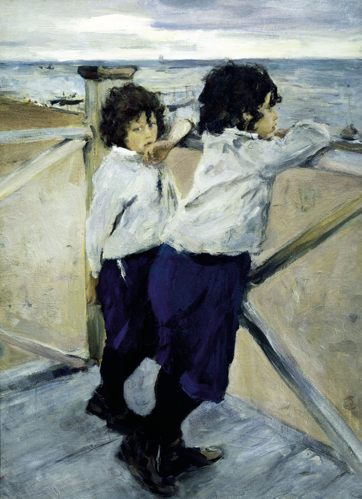

13
Картина «Дети» появилась в 1899 году. На ней изображены дети В.А. Серова, двое мальчиков, одному из которых, Саше – 7 лет, а второму, Юре – 5. Они стоят на террасе дачи. Они очень похожи друг на друга, с темными волосами, которые вьются и падают на лоб, к тому же одинаково одеты. Старший мальчик смотрит на Финский залив, а младший – на зрителя. На картине можно проследить и различие характеров детей. Старший брат сосредоточенно наблюдает открывшуюся перед ним картину вечернего залива, младший мечтательно задумчиво смотрит вперед. Характеры детей тонко подмечены и мастерски изображены благодаря их жестам и позам. Объективность передачи этого характера передан так, когда ребенок остается один, и безмятежно наблюдает за происходящим вокруг.
Получилась замечательная работа, через которую Серов пытался передать чувство восторга и умиления, которое у него появляется, когда он видит настоящую русскую красоту. Портрет полон жизни. Мы видим лето, ароматное, зеленое, солнце играет лучами и разогревает землю. Устав от его ярких лучей, девушка села под деревьями, но и там не смогла спрятаться от солнечного света. Трудно оторвать взгляд от слегка задумчивого, но умиротворенного взгляда, яркого румянца на щеках.
Помимо главных героев, детей, художник подробно изобразил открывшийся зрителю залив, небольшие лодочки, причаленные к берегу. Некоторые плавают по водной глади вдалеке. Все образы, переданные художником, удачно и гармонично связаны друг с другом. Водная гладь, и темнеющее небо, показывают, что художник хотел показать вечернее небо, тяжелые облака.
Картина перед нами – это и портрет, и жанровая сценка, и пейзаж. Серов написал эту картину не на заказ, а для себя. Оба мальчика получились в естественных позах, они сливаются с пейзажем. Перед нами предстает единый сюжет. Зрителю достаточно легко поймать это настроение, которое хотел передать художник, и в котором он сам находился, когда писал этот портрет.